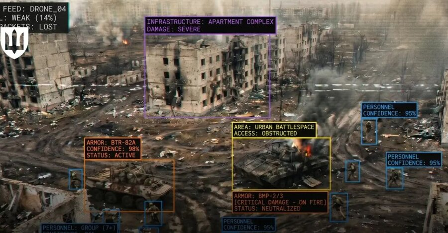

Agenda for Today
- Free write
- Discuss digital scrap doll
- Intro to computing and war
- Discuss The Iron Giant
- Preview “If an Algorithm Can Cast a Shadow”
- discussion due Tuesday at 11:59pm

Anthropic’s “Red Lines”
Mass domestic surveillance
“Using these systems for mass domestic surveillance is incompatible with democratic values. AI-driven mass surveillance presents serious, novel risks to our fundamental liberties.”
Fully autonomous weapons
“Frontier AI systems are simply not reliable enough to power fully autonomous weapons. We will not knowingly provide a product that puts America’s warfighters and civilians at risk.”
Policy
A statement from Anthropic CEO Dario Amodei on our discussions with the Department of War and national security uses of AI.
The statement’s social card. (Anthropic)
Ukraine’s AI Drone Ecosystem
- Ukraine’s Defense Ministry: more than 200 companies are developing AI-powered drone technologies
- “AI systems are already being used on the front line for autonomous drone targeting”
- The ministry “aims to equip all drones deployed at the front with machine vision and AI capabilities”
War
Over 300 AI-related developments are registered on the Brave1 platform, while more than 70 systems based on artificial intelligence and computer vision are already in active use on the battlefield, according to the ministry.

The illustration shows how artificial intelligence is already performing combat tasks on the battlefield. (Ukraine’s Defense Ministry)
ARPANET
- U.S. DoD Advanced Research Projects Agency Network
- Originally linked research computers
- Built for resource sharing between research sites; its builders call the “survive a nuclear war” origin story a “false rumor”
- ARPANET went live in 1969
- TCP/IP protocol launched in the 1970s, standardized in 1983
- Academic networks evolved to become the Internet

ARPANET logical map, March 1977 (Commons), public domain
Alan Turing and World War II
- Turing worked at Bletchley Park to break German military ciphers
- The Imitation Game (2014 film)
- Automated the search for Enigma keys with the “Bombe,” machine designed with Gordon Welchman
- Historian Harry Hinsley argued that without Bletchley’s codebreaking, D-Day would have been “deferred till 1946” (about 2 years later)

Turing (Elliott & Fry, 1951), public domain
Agenda for Today
- Shuffle seats
- Free write
- Story overview: “If an Algorithm Can Cast a Shadow”
- Exercise preview: Speculative Fiction


.jpg){kind=link}
.jpg){kind=link}